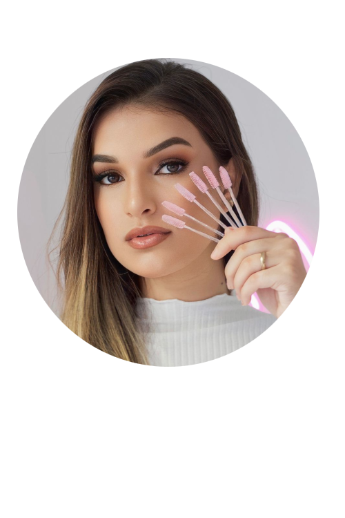

A Be Laura é uma empresa especializada na área de estética, dedicada a oferecer uma ampla gama de tratamentos e serviços de beleza e bem-estar. Fundada com o objetivo de proporcionar cuidados de alta qualidade e personalizados, a Be Laura se destaca pelo seu compromisso com a satisfação do cliente e pelo uso de tecnologias avançadas em seus procedimentos.
Entre os serviços oferecidos pela Be Laura, encontram-se tratamentos faciais e corporais, como limpeza de pele, peeling, hidratação profunda, massagens relaxantes e modeladoras, depilação, e diversos tipos de terapias que visam a saúde e a estética. A empresa também oferece serviços de estética avançada, incluindo procedimentos não invasivos, como aplicação de toxina botulínica (botox), preenchimentos, e tratamentos a laser.
Além disso, a Be Laura investe continuamente em capacitação profissional e atualização tecnológica para garantir que seus clientes recebam os tratamentos mais modernos e eficazes disponíveis no mercado. Os profissionais da Be Laura são altamente qualificados e estão sempre prontos para oferecer consultoria personalizada, ajudando os clientes a escolherem os tratamentos que melhor atendem às suas necessidades e objetivos.
A Be Laura também se preocupa com a sustentabilidade e a responsabilidade social, adotando práticas que minimizam o impacto ambiental e contribuindo para o bem-estar da comunidade. A empresa utiliza produtos de alta qualidade, que são, em sua maioria, eco-friendly e não testados em animais, alinhando-se aos valores de muitos de seus clientes.
Com uma abordagem holística do bem-estar, a Be Laura busca não apenas realçar a beleza exterior, mas também promover um estado de saúde e equilíbrio geral, proporcionando uma experiência de renovação completa para seus clientes. Seja através de um tratamento relaxante ou de uma transformação estética mais complexa, a Be Laura está comprometida em oferecer resultados excepcionais e um atendimento que supera as expectativas.
Visite a Be Laura e descubra um novo conceito de estética e bem-estar, onde cada detalhe é pensado para proporcionar uma experiência única e transformadora.
Quem é Laura?
Laura Beatriz, com 20 anos, é uma talentosa profissional na área de estética, especializada como lash designer. Ela se destaca por seu trabalho meticuloso com cílios, oferecendo serviços que incluem extensão, lifting e design de cílios, sempre priorizando a segurança e a satisfação de suas clientes. Além de sua expertise em cílios, Laura também oferece uma variedade de outros serviços estéticos que complementam sua oferta, como design de sobrancelhas e tratamentos faciais básicos. Atualmente, Laura está se formando em Estética e Cosmética, um curso que lhe proporciona um conhecimento profundo e abrangente sobre cuidados com a pele, tratamentos estéticos e as mais recentes tecnologias do setor. Sua formação acadêmica, combinada com sua experiência prática, permite que Laura ofereça um atendimento de alta qualidade e personalizado, adaptado às necessidades específicas de cada cliente.